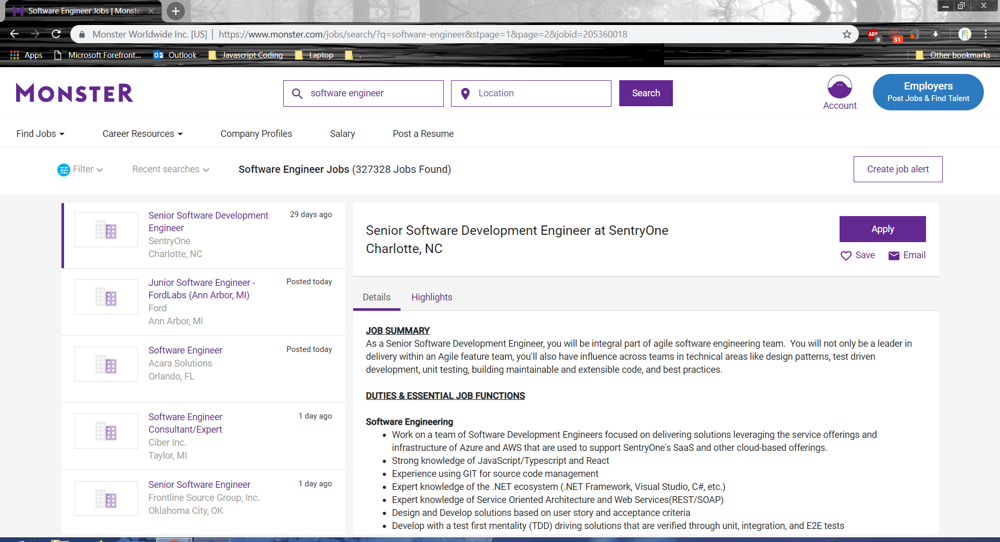

About
A LITTLE BIT ABOUT ME
I studied at Salesian College Chadstone from 2013 until 2018, I am currently studying at RMIT doing bachelor of Information Technology. I am Chinese, at home I speak a dialect of Chinese called Teo Chew, Indonesian and English. One interesting fact about me is that I can play 3 instruments; Piano, guitar and drums. I enjoy playing PC games and playing sports like volleyball and basketball.
My Interests In
Information Technology
My interest in IT is in security, software and hardware. I first developed my interest in IT a quite a long time ago when I first found that there were various aspects of IT and the various number of things that can be done with IT. Some of the IT experience I have had on the software side of things are programming small programs with visual basic and python, I also have had experience in developing a website for a client as a VCE assignment. On the hardware side of things, I have had experience in building my own custom PC as well as fixing some damaged laptops. I chose to study at RMIT because I enjoy being in the city and heard that the education for IT at RMIT was good. The things that I expect to learn during my studies is knowledge that would allow me to specialise is an aspect of IT.
My Ideal Job
https://www.monster.com/jobs/search/?q=software-engineer&stpage=1&page=2&jobid=205360018
Software Development Engineer
A Software Development Engineer is responsible for developing new software, integrate and testing them for the organisation, in this position the SDE will be required to develop software particularly in the area of Unmanned Airborne Vehicle communication platforms. This is appealing to me as I like would like to be able to create something new, and with this position I would be able be involved in developing a new or newly developing software.
For this job position, the skills required are to be self-motivated and be able to work closely with others at a fast pace, to be proficient in multi-threaded C++ developments, to be familiar with using the Linux development environments, to be familiarised with networking protocols, to have a strong ability to troubleshoot and overcome issues with the system performance and to have a strong written and verbal communication and presentation skills. It is also desired to have experience in using common engineering lab and test equipment’s. Qualifications needed for this position also included having a bachelor’s degree in Computer Science or a related engineering field and 0 to 3 years of relevant experience.
The skills that I currently have for this job position would be being self-motivated and being able to work with other people at a fast pace, being familiar with networking protocols and having a strong written and verbal communication and presentation skills.
To obtain these skills I plan on learning the C++ language as well as familiarising myself with the Linux development environment, learning C++ will have to be learnt in my own time and familiarising myself with the Linux environment will be done by installing the Linux environment to a virtual machine so I can learn how to use it effectively. To gain the qualification required for this position I will have to transfer to a computer science course or a software engineering course to be able to qualify for this position.
Tests
My Personal Profile

Personality Test


Creativity Test
To me the test presents the generic attributes for a person, although I do not believe that every single detail of the test is true as some of the questions can be confusing to the person taking the test as it can be unrelatable to them.
I don’t think that the results of the test can influence my behaviour in a team as I can behave differently depending on who I work with.
Although I said that the results may not reflect every detail about the person, while forming a team I should consider the results of other as it will show what that person is like, their way of learning and how it can be beneficial towards how the team work together.